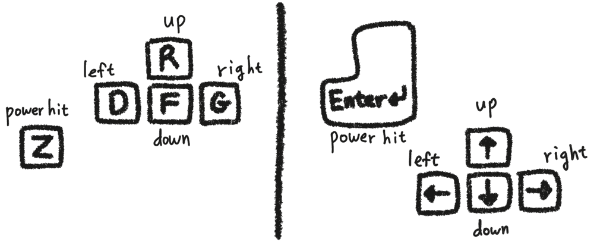

Pikachu Volleyball is an old Windows game which was developed in
Japan in 1997. You can play this game here online by establishing a
peer-to-peer connection with someone else also here.
The latest version of the web browser is recommended. The latest
versions of Chrome, Firefox and Safari browsers are checked and
supported. Internet Explorer is not supported.
Notice: This peer-to-peer online version
is not playable under the following environment. (WebRTC, which is a technology this P2P online version utilizes, cannot
establish a
peer-to-peer
connection under the following environment.)
If you are under a (corporate) firewall which blocks UDP ports
If you are under a
symmetric NAT
(As an example, 3G, 4G or LTE cellular network is commonly under
this environment.)
By using the "Test network" button below, you can check your network
about the two issues above.
Controls: Use the one comfortable for
you. (In case of a touch/mobile device, you need a Bluetooth
keyboard.)

Replay: When you click the "Save replay"
button (which will appear above the game screen), a replay file
— which covers from the start of the game to the moment you
click the button — are saved. You can view the replay file by
using the Replay Viewer.
Options: You can check the options you
want.
Nickname: You can set your nickname
below. (The default nickname is "Player".) There's no uniqueness checking!
So
it does not mean you met the same peer even if they use the same
nickname.
You can loosely identify the peers you met
on Quick Match by the partial public IP address shown below the
nickname.
How to play online with one of your friends:
Room Creator - Click "create room"
button. Then, send the Room ID (via a messenger, email or whatever)
to the one ("Joiner") you want to play this game online with.
Joiner - Copy and paste the received Room
ID into the text input box left of the "join room" button, and click
the "join room" button. Then connection process will be started.
Notice: The connection will be
established in about 5-10 seconds after the joiner clicked the "join
room" button. If the game is not started after the waiting time, it
indicates that the connection failed.
Room ID:
Connection Log:
Press "Enter" key to start Quick Match.
(It is for preventing devices without a keyboard from doing quick
match.)
Number of matches connected by
Quick Match within the last..
24 hours:
1 hour:
10 minutes:
Quick Match Log:
Number of communication with the quick match server:
0
Connection Log:
Waiting for someone to come here to play Pikachu Volleyball...
Found a peer. (If the game is not started in about 20 seconds after this
message appers, it means the connection failed.)
Found a peer. It will connect to them after 5 seconds.
Now connecting to a peer... (If the game is not started in about 20
seconds after this message appers, it means the connection failed.)
Disconnected from the quick match server.
Failed to connect to the quick match server.
The room ID format is not valid. Please check the entered room ID.
There is no room matching the ID. Please check the entered room ID.
The peer already clicked the "cancel Quick Match" button.
The room matching the ID is already joined by someone else.
(1) The necessary server reflexive candidate can be gotten, or your
computer is assigned a public IP address. (UDP ports are open.)
(2) Your network is not behind a symmetric NAT.
This P2P online version is not going to work on your network.
The necessary server reflexive candidate can't be gotten. Maybe the
reason is that the necessary UDP ports are blocked. If you connected
via a corporate network, maybe the firewall is blocking the UDP
ports.
If you see this message after following the troubleshooting in the
case of your public IP address being obfuscated by the browser,
there's no more to do if you are not an administrator of the corporate
network. It is recommended that, on the Chrome browser, visit the page
chrome://flags/#enable-webrtc-hide-local-ips-with-mdns
(by copying and pasting the address) and turn back the setting of
"Anonymize local IPs exposed by WebRTC" to "Default".
This P2P online version is not going to work on your network. It is
one of the following two cases. It is recommended that, first, do the
troubleshooting on (2).
(1) The necessary server reflexive candidate can't be gotten. Maybe
the reason is that the necessary UDP ports are blocked. If you
connected via a corporate network, maybe the firewall is blocking the
UDP ports.
(2) If your computer is assigned a public IP address (since your
computer is connected directly to the internet without a router), the
server reflexive candidate is not necessary. But it can be the case
the public IP address is obfuscated to mDNS by the web browser since
it is somehow treated as a local IP address. In this case, on the
Chrome browser, visit the page
chrome://flags/#enable-webrtc-hide-local-ips-with-mdns
(by copying and pasting the address) and change the setting of
"Anonymize local IPs exposed by WebRTC" to "Disabled". Then, this P2P
online version would work.
This P2P online version is not going to work on your network.
Your network is behind a symmetric NAT.
Loading the game assets...
Menu description
"2人でぴかちゅ~"(upper) - Keep the
current side of play "2人でぴかちゅ~"(lower) - Swap the side
of play
Waiting for the peer to load the game assets...
Average ping: ms
If the ping is over 100 ms, the game play can be unstable.
If the physical distance from the peer is far (e.g. across
continents and oceans),
the ping can be high.
The game starts in seconds.
You want to change the option like above. After asking the peer
about the change, the option will be changed if only the peer
agrees. Do you want to proceed?
The peer want to change the option like above. Only if you agree,
the option will be changed. Do you agree?
Peer agreed about changing the option.
It was applied successfully.
Peer did not agree about changing the option.
Speed option cannot be changed when the game is in progress. Please
retry after the game is finished.
Winning score option cannot be changed when the game is in progress.
Please retry after the game is finished.